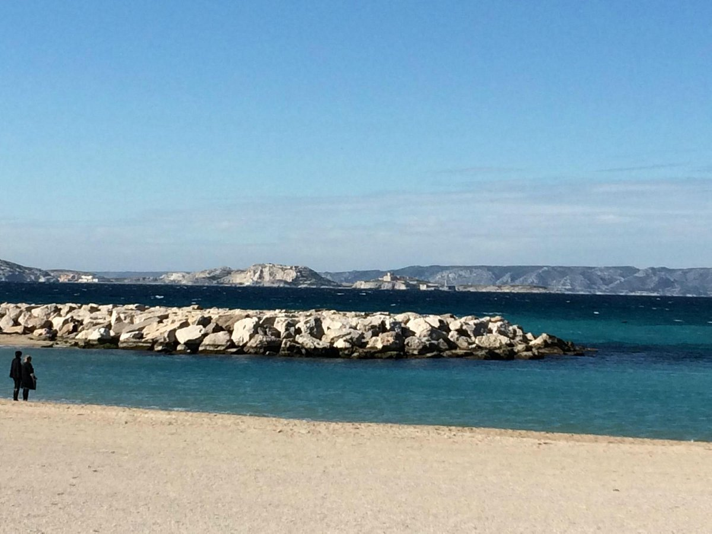
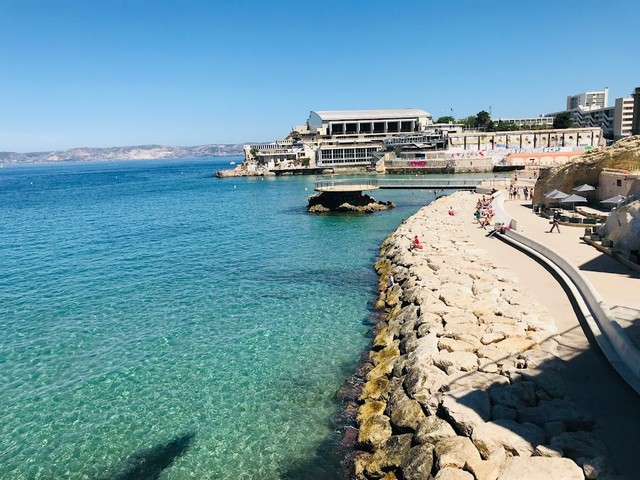
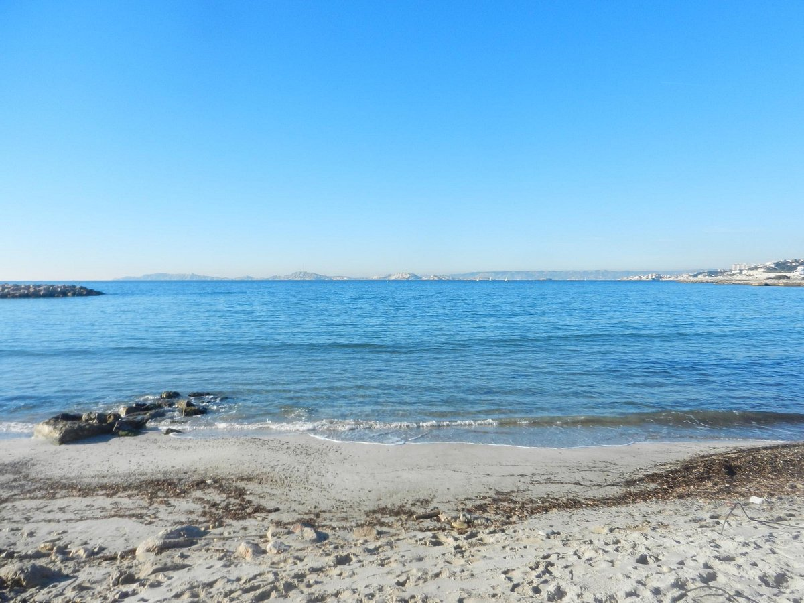
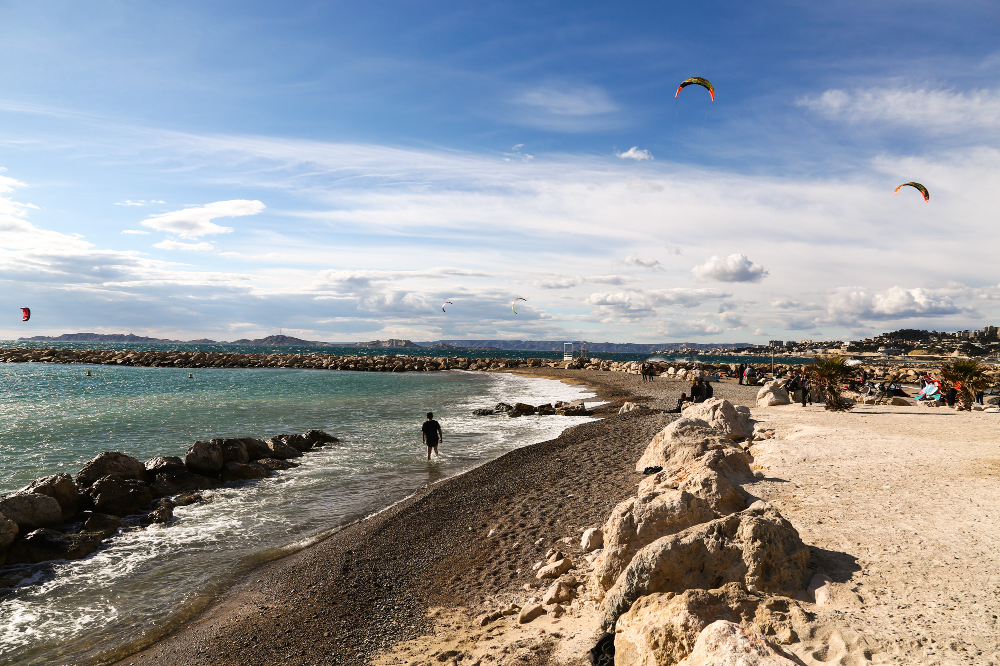
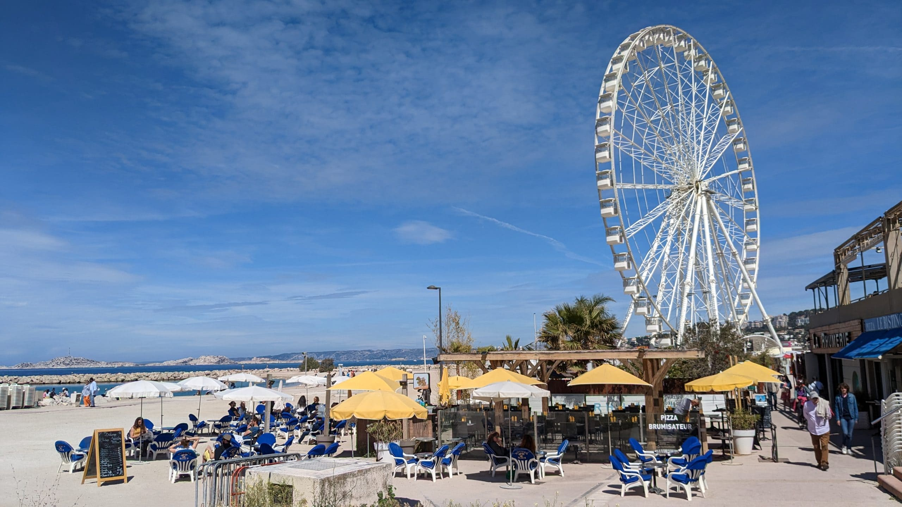
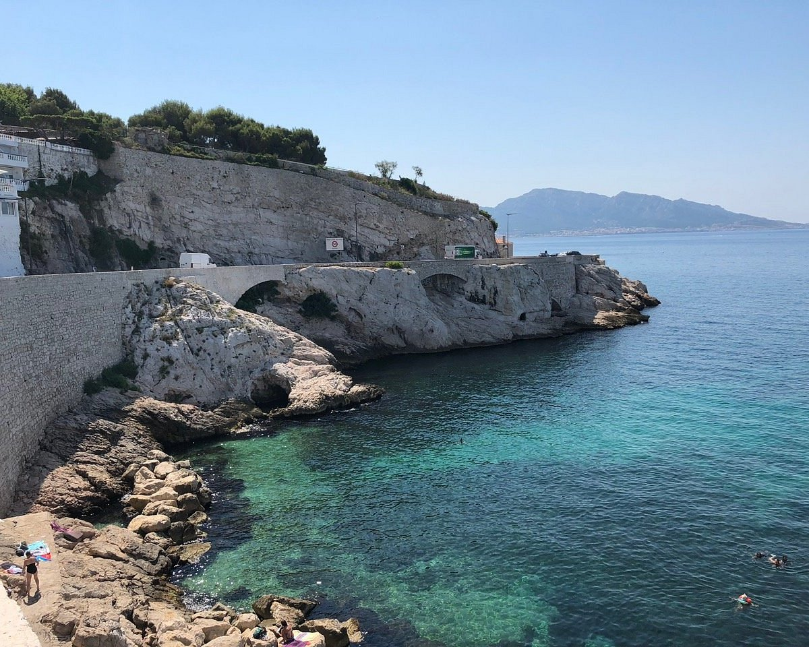
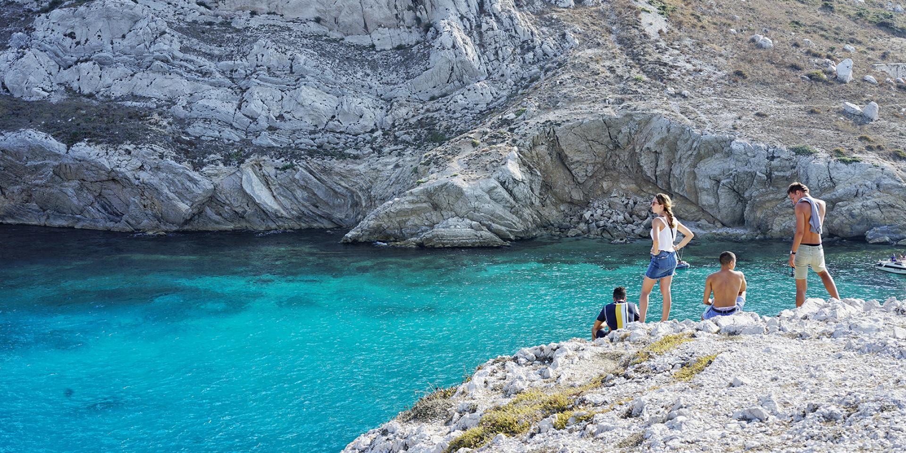
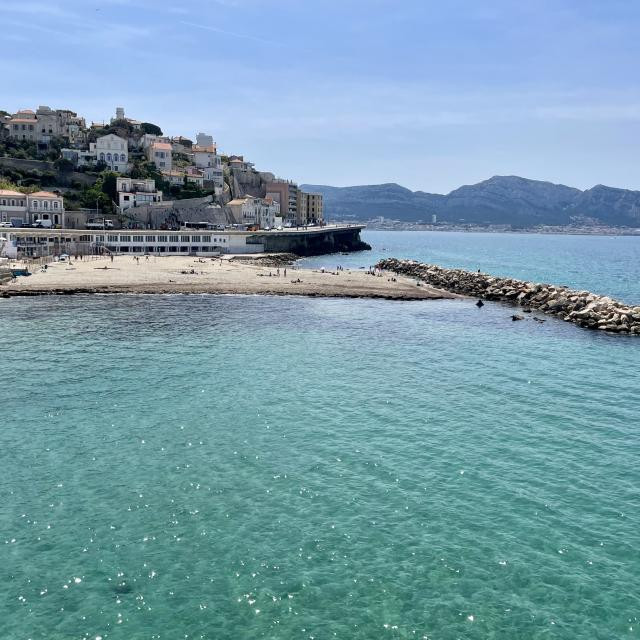
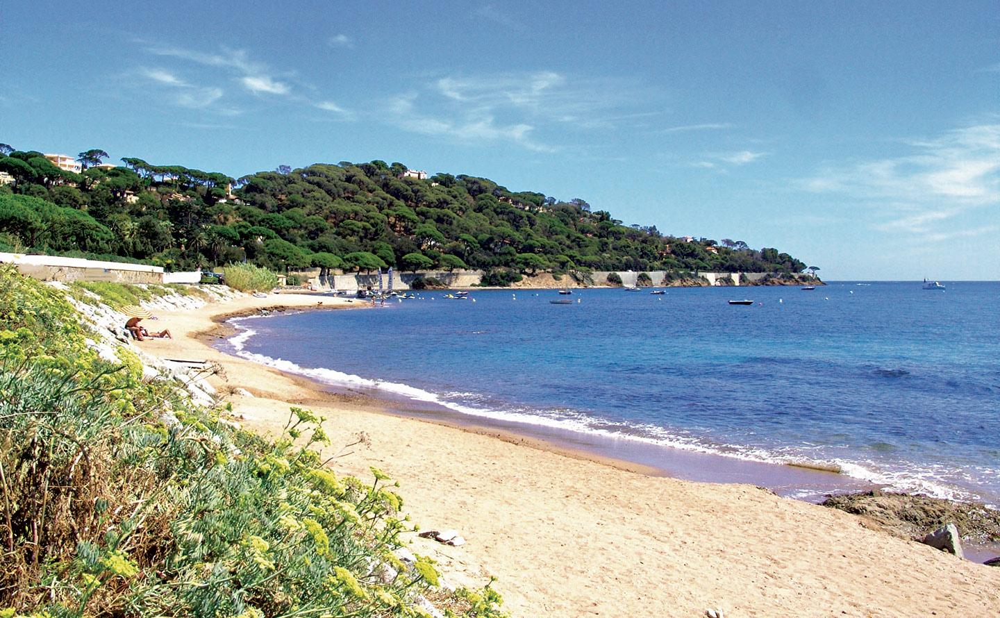
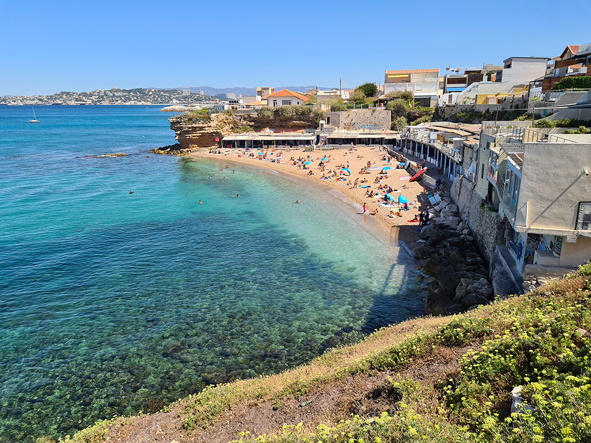

Les Plages de Marseille :
Plage du Prado
Vaste et animée, la Plage du Prado est réputée pour son sable fin et ses eaux cristallines. Parfaite pour les amateurs de sports nautiques, elle offre une ambiance dynamique avec des restaurants en bord de mer.
Plage des Catalans
Nichée au cœur de la ville, la Plage des Catalans séduit par son charme intimiste. Bordée par des cafés pittoresques, elle offre une vue magnifique sur le Vieux-Port, créant une atmosphère paisible.
Plage de la Pointe Rouge
Destination familiale par excellence, la Plage de la Pointe Rouge séduit par son sable doux et son ambiance décontractée. Les activités nautiques y sont nombreuses, et les restaurants de fruits de mer vous attendent à proximité.
Plage de la Vieille Chapelle
Petite crique préservée, la Plage de la Vieille Chapelle est un havre de tranquillité. Son accès escarpé en fait une escapade paisible, idéale pour les amateurs de calme et de beauté naturelle.
Plage de l'Escale Borely
Entourée de verdure, cette plage offre un cadre naturel relaxant. Parfaite pour une journée de détente, elle propose des locations de transats et une belle promenade le long du parc Borely.
Plage de la Fausse Monnaie
Petite plage secrète, la Plage de la Fausse Monnaie est un joyau caché. Son ambiance préservée et son accès par les sentiers côtiers la rendent idéale pour une escapade paisible, l'emplacement parfait pour ce qui recherche de la tranquillité.
Plage des Goudes
Enveloppée par les collines calcaires des Goudes, cette plage offre un paysage spectaculaire. L'eau cristalline et les petites criques font de cet endroit un lieu préservé, parfait pour une journée de détente et de contemplation.
Plage du Prophète
Avec son sable fin et ses eaux peu profondes, la Plage du Prophète est un lieu idéal pour les familles. L'atmosphère décontractée et les restaurants à proximité en font un endroit prisé, un endroit à ne pas rater!
Plage de la Madrague
Petite plage de pêcheurs, la Madrague offre une atmosphère authentique. Les bateaux colorés et les cabanons de pêcheurs créent un décor pittoresque, idéal pour une journée paisible au bord de l'eau.
Plage de la Bonne Brise
Bordée par des pins parasols, la Plage de la Bonne Brise offre une évasion naturelle. Calme et peu fréquentée, elle est parfaite pour ceux qui recherchent une expérience balnéaire loin de l'agitation.
